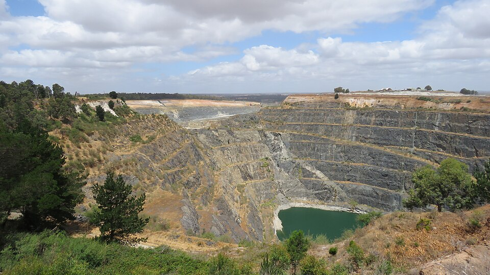

Critical Minerals: From Chinese Dominance to Managing Dependencies
Value chains, geoeconomic power, and the restructuring of supply

The energy and technology transitions are not bringing an end to the material dependencies of our economies: they are shifting some of them. The historical dependence on fossil fuels is now compounded by growing reliance on critical minerals and metals, which are essential both to electrification and to advanced industries ranging from digital technologies to defense. Rapidly rising demand for these resources is contributing to the emergence of new power relationships among states.
But where does the vulnerability really lie? In the location of the resources, or in the ability to control their transformation through to their final industrial use?
China offers a particularly revealing case. Although Beijing possesses substantial domestic resources, its dominant position also rests on a deliberate policy pursued over several decades to control successive stages of value chains, from extraction and refining to the manufacture of components and high-value products. This industrial position now gives China a geoeconomic lever that can be used in its relations with partners and competitors.
This power nevertheless contains a paradox. When it is used as an instrument of pressure, it exposes the vulnerabilities of other powers and encourages them to diversify supply, rebuild industrial capabilities, and, more broadly, restructure global value chains.
Understanding the construction of China's mineral power and its consequences therefore raises a question of direct relevance to France: how can vulnerabilities be reduced without pursuing the illusion of complete autonomy, and how can dependencies instead be effectively managed?
I. Building China's Mineral Power: From the Mine to the Value Chain
A strategy built over several decades
China's dominant position in critical minerals, particularly evident in rare earths, is not solely the result of favorable geology. It is also the product of several decades of public policy that gradually shifted from resource extraction toward control of value chains. A study by Yuzhou Shen, Ruthann Moomy, and Roderick Eggert on Chinese rare-earth policies between 1975 and 2018 identifies five successive phases in the development of the industry. The authors nevertheless show that Beijing's objectives evolved alongside the country's economic and industrial development: it would therefore be excessive to interpret this trajectory as the linear execution of a strategy designed from the outset to secure global dominance of the sector.[1]
The first phase began in the mid-1970s. In 1975, the central government created the National Rare Earth Development and Application Leading Group, the first sign of Beijing's specific interest in the sector. At that time, the priority was essentially economic: to develop a still-emerging extractive industry, increase production, and promote exports, particularly to generate foreign currency. Tax measures adopted in the 1980s contributed to this growth. Between 1985 and 1990, Chinese rare-earth production doubled, rising from approximately 8,500 to 16,500 metric tons of rare-earth oxides.[1]
The approach began to change in the 1990s. The objective was gradually no longer limited to extracting and exporting greater volumes, but increasingly involved protecting resources and developing value-creating activities within China. Beijing progressively restricted some upstream extraction activities and foreign investment while encouraging downstream development. This shift intensified from 1999 onward with the introduction of export quotas, followed by production quotas, taxes, and a policy of industry consolidation. Restrictions notably favored companies generating greater value added and placed tighter limits on exports of minimally processed products. These policies helped make raw materials available on advantageous terms to domestic industry and encouraged the development in China of processing activities and the production of intermediate and finished goods.[1]
From the 2000s and 2010s onward, this policy was combined with objectives of industrial rationalization, action against illegal mining, resource conservation, and reduced environmental damage. China's trajectory therefore cannot be reduced to the implementation of a single geopolitical plan: its economic, industrial, and environmental motivations changed over time. Their cumulative effect was nevertheless remarkable. China gradually moved from being a major resource producer to becoming an integrated power across much of the value chain.[1]
From extraction to processing: where does power really lie?
This evolution makes it possible to move beyond a strictly geological understanding of dependence on critical minerals. Possessing substantial resources is an advantage, but it is not sufficient to explain China's position. Between the mine and the final use of a mineral lie several successive operations: extraction and concentration, separation, refining, production of metals and alloys, component manufacturing, and integration into high-value industrial products. Control over these midstream and downstream stages largely determines whether a natural resource can become an industrial advantage.
The case of rare earths used in permanent magnets is particularly revealing. According to the International Energy Agency (IEA), China accounted in 2024 for approximately 60% of global mining of magnet rare earths. Its share rose to 91% at the refining stage and 94% of global production of sintered permanent magnets. The latter figure stood at only around 50% in 2005.[2]
60% → 91% → 94%: China's dominance therefore increases at each successive stage of the value chain.
This concentration is especially strategic because permanent magnets are essential to many sectors, including electric vehicles, wind turbines, industrial motors, data centers, aerospace, and defense. The issue is therefore not only access to the mineral, but also the availability of industrial capabilities to turn it into components required by industries much further downstream. The IEA emphasizes that this pattern extends beyond rare earths: among twenty strategic minerals examined, China is now the leading refiner of nineteen, with an average market share of approximately 70%.[3]
This dominance also rests on an industrial ecosystem that cannot be replicated quickly: economies of scale, infrastructure, technical skills, vertical integration, and substantial domestic demand. Chinese control now extends to some of the equipment and technologies needed to process minerals. Export controls announced in 2025 covered not only rare earths and related products, but also equipment and technologies used in their processing, separation, and refining. The IEA considers this concentration of technology an additional obstacle to the development of alternative supply chains.[2][3]
The location of resources therefore represents only part of the equation. A mine outside China does not by itself guarantee an independent supply chain if subsequent stages remain concentrated in China. Conversely, control of processing capabilities makes it possible to exert influence over resources extracted elsewhere and over the industries that depend on them.
Geology creates a resource; industrial control creates a lever of power.
It is precisely when this industrial concentration encounters a political or trade crisis that its geoeconomic dimension becomes fully apparent. From the 2010 China-Japan tensions surrounding the Senkaku/Diaoyu Islands to more recent restrictions imposed amid trade tensions with the United States, China has repeatedly demonstrated that its position in value chains can have consequences extending far beyond industrial policy alone.
Sources — Building power and controlling value chains
- Yuzhou Shen, Ruthann Moomy & Roderick G. Eggert, China's public policies toward rare earths, 1975–2018, Mineral Economics, vol. 33, 2020, pp. 127–151. Springer Nature.
- International Energy Agency, Rare Earth Elements — Executive Summary, 2024–2026 data. IEA.
- International Energy Agency, With new export controls on critical minerals, supply concentration risks become reality, 2025. IEA.
When dependence becomes a geoeconomic instrument
The concentration of extraction, refining, and processing capacity is not in itself an instrument of power. It becomes one when the actor controlling these capabilities can alter access to a resource in order to influence the behavior or choices of other states. From this perspective, Chinese policy provides several examples, although they differ in both intensity and purpose.
The first level involves broad export restrictions in a context of economic and industrial competition: limiting the outflow of raw materials in order to retain more processing and value added domestically. Beginning in the 2000s, China introduced various quotas, taxes, licenses, and restrictions applicable to rare-earth exporters. These measures helped reduce the availability of some raw materials outside the country and promoted their use by Chinese industry. Beijing cited resource conservation and environmental protection, while its partners also viewed the measures as an industrial-policy instrument giving Chinese companies preferential access to raw materials. The United States, the European Union, and Japan challenged the measures before the World Trade Organization in 2012. The restrictions were ultimately found inconsistent with China's trade obligations.[1]
The 2010 China-Japan crisis over the Senkaku/Diaoyu Islands illustrates a second, much more directly political use of dependence as a means of pressure against a particular state. After a Chinese fishing trawler collided with Japanese Coast Guard vessels in disputed waters and Japanese authorities arrested its captain, Chinese rare-earth exports to Japan were abruptly disrupted. Beijing denied ordering an official embargo, and the existence of a formal decision remains disputed. The episode nevertheless represents a striking case of a targeted near-interruption of supply in the immediate context of a geopolitical crisis.
China-U.S. tensions in the 2020s illustrate a third scenario, at the intersection of technological, commercial, and strategic competition. Beginning in 2023, Beijing successively introduced export controls on gallium, germanium, graphite, and other critical materials, as Washington tightened restrictions on China's access to advanced semiconductors and related technologies. A recent study by the Swedish Institute of International Affairs considers China's 2023–2024 restrictions on gallium, germanium, graphite, and antimony primarily a response to U.S. technology restrictions, while the 2025 rare-earth measures were more directly embedded in the escalation of China-U.S. trade and tariff tensions.[2] A further threshold was crossed in April 2025, when Beijing subjected exports of seven medium and heavy rare earths, as well as certain related compounds, metals, and magnets, to licensing requirements. Legally, this was not a total ban: exports remained possible if a license was obtained.[3] The consequences nevertheless demonstrated the system's potential power. According to the IEA, export volumes fell sharply in April and May 2025. Automakers in the United States, Europe, and elsewhere faced shortages of permanent magnets; some reduced output or temporarily halted production. In Europe, prices for some of the affected rare earths rose to as much as six times the prices observed in China.[4]
A power holding a near-monopoly over an indispensable stage does not necessarily need to impose a formal export ban: slowing the award of licenses or creating sufficient uncertainty may be enough to disrupt industrial supply chains operating with low inventories and few alternative suppliers.
An explicit ban did, however, emerge in the confrontation with Washington. In December 2024, China prohibited exports to the United States of certain dual-use items related to gallium, germanium, and antimony. The ban was suspended in November 2025 as part of a temporary easing of China-U.S. trade tensions.[5] The succession of restrictions and subsequent relaxations demonstrates that controls over critical minerals can now be incorporated into a much broader economic and strategic negotiation alongside tariffs, semiconductors, and technology restrictions.
In each case, the effectiveness of the leverage rests on the same asymmetry: the importing country's difficulty in rapidly finding an alternative source. In 2024, the U.S. Geological Survey estimated that a complete interruption of net Chinese gallium exports could reduce quantities available to the rest of the world by nearly 40% and increase its price by more than 2.5 times, with economic repercussions far exceeding the market value of the mineral itself.[6]
Control of a critical stage therefore makes it possible to influence industrial chains whose value bears little relation to that of the controlled raw material. It is precisely this discrepancy that transforms a dominant industrial position into geoeconomic leverage.
Yet the use of this leverage contains a paradox. The more a dependency is used as an instrument of pressure, the more visible and politically costly it becomes for the country exposed to it. The 2010 episode accelerated Japanese diversification; more recent restrictions led the United States and its partners to mobilize substantial public capital to rebuild alternative chains. The exercise of Chinese power thus helps accelerate the restructuring of the value chains on which that power itself depends.
Sources — Geoeconomic uses
- World Trade Organization, China — Measures Related to the Exportation of Rare Earths, Tungsten and Molybdenum, DS431/DS432/DS433. WTO.
- Swedish Institute of International Affairs, China's Mineral Export Restrictions: Market Impacts and Implications, 2025. Report.
- International Energy Agency, Export controls on certain medium and heavy rare earth items, 2025. IEA.
- International Energy Agency, With new export controls on critical minerals, supply concentration risks become reality, 2025. IEA.
- Reuters, suspension in November 2025 of Chinese restrictions targeting certain dual-use goods destined for the United States. Reuters.
- Nassar et al., U.S. Geological Survey, Quantifying Potential Effects of China's Gallium and Germanium Export Restrictions on the U.S. Economy, 2024. USGS.
II. From Dependence to De-Risking: Restructuring Value Chains
The growing use of critical minerals as instruments of economic and strategic policy produces a paradoxical effect. By exposing vulnerabilities created by concentrated value chains, it encourages affected states to invest in diversification. The pursuit of minimum cost is therefore increasingly being supplemented by a new imperative: security of supply.
Diversifying the geography of supply
Japan provides one of the earliest and strongest examples of this development. Only a few months after the 2010 China-Japan crisis, JOGMEC and the Japanese trading company Sojitz reached an agreement with the Australian company Lynas in March 2011. The arrangement provided $250 million in loans and equity investment in exchange, among other commitments, for securing at least 8,500 metric tons of rare earths annually for the Japanese market over ten years—then equivalent to approximately 30% of Japan's needs. JOGMEC explicitly stated that the objective was to diversify sources of supply and improve their stability.[1] In 2023, JOGMEC and Sojitz invested an additional AUD 200 million in Lynas, securing up to 65% of the planned production of dysprosium and terbium from Mount Weld for Japan.[2]
The United States is now following this approach on a much larger scale. Australia plays a central role because of its resources, political stability, and place within the U.S. alliance system. The U.S.-Australia framework signed in 2025 provides for the mobilization of public and private financing, loans, guarantees, equity investments, and long-term purchase agreements to accelerate the development of critical-mineral projects.[3]
The European Union is also pursuing diversification. The Critical Raw Materials Act sets a target that, by 2030, the Union should not depend on any single third country for more than 65% of its annual consumption of a strategic raw material. This policy rests both on the development of European capabilities and on a growing number of partnerships with producing countries.[4]
However, diversifying extraction locations is not enough to diversify a value chain—and this is the central point. A mineral extracted in Australia, Africa, or Latin America may remain dependent on Chinese capabilities if it must be sent to China for separation, refining, or processing. Geographic diversification of supply is therefore only a first step.
Building alternative value chains
Reducing a dependency therefore requires thinking not only in terms of resources, but in terms of complete value chains.
The example of Lynas is again instructive. The Japanese-backed arrangement does not rest solely on the Mount Weld mine in Australia: it was accompanied by the development of separation and refining capacity outside China. The objective has therefore gradually moved from securing a resource to securing a chain that can actually deliver it for industrial use.[1][2]
Current U.S.-Australia cooperation explicitly follows this logic. The framework concluded by Washington and Canberra jointly addresses the mining and processing of critical minerals and rare earths. The financial instruments involved are intended to support not only mining projects but also the expenditure required for processing, while offtake agreements guarantee part of the demand in advance.[3]
This evolution reflects a transformation in the very concept of economic security: access to a resource does not guarantee autonomy if an indispensable intermediate stage remains controlled by a dominant actor. Extraction, separation, refining, material production, and component manufacturing must therefore be considered together.
This logic also leads states to intervene more extensively in a sector regarded as strategic. Public financing, guarantees, equity stakes, long-term purchase agreements, strategic stockpiles, and support for research are all instruments through which capabilities that market forces alone might not produce can be developed.
Security comes at a cost
This restructuring nevertheless faces a major difficulty: resilience has a cost. The current concentration of value chains is not solely the result of political choices. It also reflects economies of scale, accumulated industrial expertise, existing infrastructure, and significant differences in production costs. According to the IEA, capital expenditure requirements for mining and refining projects developed outside the leading producer country are generally around 50% higher.[5]
An alternative chain may therefore be strategically desirable while remaining less economically competitive. This runs counter to the logic that prevailed for decades, centered on cost optimization, efficiency, and availability. Rising geopolitical tensions now require other criteria to be taken into account: security, diversification, redundancy, and control.
This shift explains growing state intervention. Without public guarantees, purchase agreements, price-stabilization mechanisms, or equity investment, some alternative projects might not be viable against dominant producers. The IEA thus considers that supply-chain diversification is unlikely to emerge from market forces alone and will require public policies and international partnerships.[5]
A central trade-off therefore lies at the heart of economic-security policy: how much is a power prepared to pay to reduce a strategic dependency? Eliminating every dependency would entail enormous costs and appears unattainable. Conversely, continuing to optimize for cost alone may preserve vulnerabilities that become extremely expensive during a crisis. According to the IEA, for example, a prolonged disruption in the supply of battery metals could increase the global average price of battery packs by 40% to 50%.[6]
De-risking is therefore not about pursuing autarky, but about accepting a degree of resilience cost to prevent an economic dependency from becoming a strategic vulnerability.
This distinction is particularly important for France. With more limited financial resources and mineral endowments than the United States or China, it cannot seek to reproduce every value chain within its territory. The issue is therefore less one of autonomy than of deciding which dependencies to reduce, which stages to secure, and which partnerships to build.
Sources — Part II
- JOGMEC / Sojitz, Sojitz and JOGMEC enter into Definitive Agreements with Lynas Including Availability Agreement to secure supply of Rare Earths products to Japanese Market, March 30, 2011. JOGMEC.
- JOGMEC / Sojitz, Securing Supply of Heavy Rare Earths to Japan with Additional Investment to Lynas, March 7, 2023. JOGMEC.
- United States / Australia, Framework for Securing of Supply in the Mining and Processing of Critical Minerals and Rare Earths, 2025. White House.
- European Commission, European Critical Raw Materials Act. European Commission.
- International Energy Agency, Global Critical Minerals Outlook 2025 – Policy mechanisms for diversified mineral supplies. IEA.
- International Energy Agency, Global Critical Minerals Outlook 2025 – Executive Summary. IEA.
III. Managing Dependencies: A Desirable Path for France
Given the concentration of critical-mineral value chains, France faces a different situation from the United States or China. Its domestic resources and financial capabilities are more limited. The objective cannot be to reproduce within France every chain required by the French economy. It must instead identify the most critical dependencies, rebuild selected industrial capabilities, and diversify supply through international partnerships.
Producing more where possible
The first response is to make greater use of resources available domestically. The EMILI project, led by Imerys at Beauvoir in the Allier department, is the most emblematic example. It plans not only to extract lithium from the deposit, but also to process it, with the aim of contributing to the needs of Europe's battery industry. In February 2026, the French government announced a €50 million equity investment in the project, which is now recognized as strategic at the European level.[1]
This return of mining activity is a strong signal after several decades of declining extraction in France. Important as it is, however, it cannot by itself constitute a sovereignty strategy. Mining projects require substantial investment and long lead times, and must meet demanding environmental and local-acceptance requirements. Furthermore, France's geology does not contain every mineral required by its industry.
Producing more in France is therefore part of the answer, but it does not eliminate the constraint of external dependencies.
Securing the truly strategic stages
French strategy is consequently moving beyond extraction alone. The national resilience plan for rare earths and permanent magnets, presented in May 2026, explicitly seeks to rebuild a value chain extending from rare-earth separation to magnet manufacturing and recycling. Industrial capabilities are being developed in La Rochelle, Lacq, and Grenoble. Nearly forty projects have already received approximately €330 million in public support under the France 2030 investment plan.[2]
This approach reflects the conclusion drawn earlier from the Chinese case: owning the resource is insufficient if the capabilities needed to process it remain concentrated elsewhere. The strategic question therefore becomes which stages must be controlled or, at a minimum, available from several suppliers. The objective cannot be to eliminate every dependency. It is instead to prevent excessive concentration in a stage that is difficult to substitute from paralyzing an industrial sector. Sovereignty should therefore be understood less as the pursuit of self-sufficiency than as the capacity to manage dependencies.
Building critical-minerals diplomacy
Such management necessarily involves France's external action. France has developed cooperation with resource-rich countries over several years, through partnerships based on different rationales.
Australia holds a particular place in the Indo-Pacific. Paris and Canberra signed a critical-minerals cooperation agreement in 2023, and their enhanced strategic roadmap of June 2026 explicitly provides for continued dialogue. Australia is simultaneously a major mining power, a political partner of France, and a central player in Western efforts to diversify regional value chains.[3]
In Argentina, the approach combines economic diplomacy and industrial investment. The country has substantial lithium and copper resources; Eramet has invested approximately $900 million there and, in 2025, became the first European company to produce lithium carbonate industrially in Argentina. France and Argentina also signed a declaration of intent on critical minerals in June 2025.[4]
The Democratic Republic of the Congo illustrates another challenge. Despite its exceptional mineral resources, the French presence in exploration and production remains limited. Emerging mining cooperation with Kinshasa must also take into account producing countries' growing aspiration to develop more processing and value added within their own territories.[5] Sustainable security of supply cannot therefore rest on a simple relationship between extracting and processing countries: it requires partnerships that also offer an industrial interest to producer states.
This mineral diplomacy is also acquiring a multilateral dimension. Under the French presidency, the G7 made diversification of critical-mineral supply chains and action against their economic weaponization a priority in 2026. Members and partners notably set an objective of reducing their dependence on any single supplier outside the group to below 60% by 2030 for rare earths and permanent magnets, while jointly developing extraction, processing, and recycling.[6]
France's response to Chinese dominance therefore involves neither pursuing complete decoupling from China nor reproducing its model of integration on a smaller scale. It instead rests on a combination of targeted domestic capabilities, control of selected critical stages, and international diversification of supply.
The ultimate question is not how to cease depending on China altogether, but at which stages this dependence remains acceptable and which alternatives must exist to prevent it from becoming a coercive vulnerability.
Sources — Part III
- French Ministry of the Economy and Finance, Participation de l'État au capital du projet lithium EMILI, February 11, 2026. Ministry of the Economy.
- French Directorate General for Enterprise, Plan national de résilience « Terres rares et aimants permanents », May 5, 2026. DGE.
- French Ministry for Europe and Foreign Affairs, Australie – Politique et économie; Renforcer la feuille de route France-Australie, June 2026. MEAE.
- French Ministry for Europe and Foreign Affairs, Argentine – Politique et économie; France-Argentina economic partnership. MEAE.
- French Ministry for Europe and Foreign Affairs, République démocratique du Congo – Politique et économie. MEAE.
- G7, Déclaration des chefs d'État et de gouvernement sur la sécurisation des chaînes d'approvisionnement en minerais critiques, June 17, 2026. MEAE.
Strategic Implications
1. Dependencies must be chosen.
No power—and certainly not France—can control every resource and value chain required by its economy. The challenge is less to eliminate dependencies than to decide which can be accepted and which must be reduced.
2. A dependency is not necessarily a vulnerability.
It becomes one when it combines three characteristics: high concentration, limited substitutability, and the possibility of weaponization by the actor that controls it. This framework should make it possible to prioritize security efforts rather than seek generalized autonomy.
3. Control of value chains matters more than ownership of resources alone.
A mine does not guarantee security of supply if refining, processing, or component production remains concentrated elsewhere. Power lies not only beneath the ground, but above all in the capacity to transform a resource into industrial capability.
4. Diversification must not merely shift dependencies.
Replacing one dominant supplier with another does not necessarily create greater resilience. Diversification must build managed interdependencies based on multiple partners, reciprocal interests, and alternative capabilities that can be mobilized in a crisis.
5. The use of coercive leverage can accelerate its own decline.
Japan after 2010 and, more recently, the United States show that a supply restriction can trigger investment, diversification, and the reconstruction of alternative chains. The exercise of geoeconomic leverage simultaneously reveals its value and encourages other powers to free themselves from it.